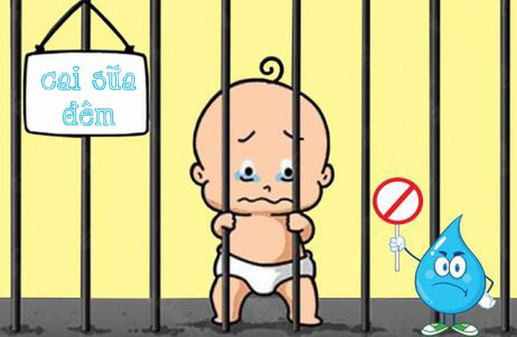
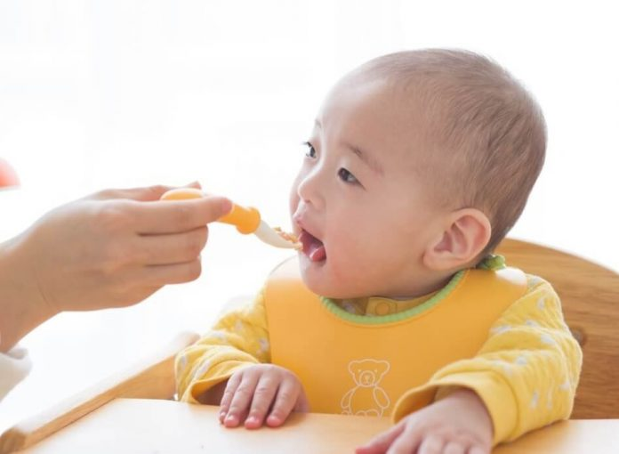

Có nên cho bé bỏ bú đêm? Làm sao
tập cho bé bỏ bú đêm?
Làm sao tập cho bé bỏ bú đêm là một trong những vấn đề mà mẹ bỉm sữa nào cũng gặp phải
trong quá trình nuôi dạy con. Mỗi phụ huynh sẽ có những cách tập bỏ bú đêm cho bé riêng,
phù hợp với bé nhất. Tuy nhiên nếu mẹ nào còn đang gặp rắc rối trong vấn đề này thì bài
viết dưới đây sẽ là những thông tin mẹ không nên bỏ qua.
Có nên cho bé bỏ bú đêm?
Giai đoạn trước ăn dặm, sữa mẹ là nguồn dinh dưỡng tốt nhất của trẻ nhỏ. Vì vậy việc
cung cấp cho bé đầy đủ dưỡng chất và năng lượng là điều quan trọng để bé có thể phát
triển một cách tốt nhất.
nguồn dinh dưỡng của bé đã có sự thay đổi và không còn tập trung hoàn toàn vào sữa mẹ.
Đồng thời việc bú đêm cũng không còn mang đến những tác động tích cực cho sự phát triển
của bé. Để giúp bố mẹ hiểu rõ được vai trò của bú đêm cũng như có nên bỏ bú đêm cho bé
hay không, hãy cùng tìm hiểu chi tiết vai trò sữa đêm trong từng giai đoạn tháng tuổi. 
Ở giai đoạn sơ sinh
Giai đoạn này là tháng tuổi đầu tiên của bé từ khi được sinh ra. Thời điểm này, các
chuyên gia khuyến cáo bố mẹ không nên cho bé bú đêm. Vì những ngày đầu, bé có nhu cầu
ngủ nhiều hơn, việc bú đêm sẽ làm gián đoạn giấc ngủ của con. Giai đoạn này bé cần đảm
bảo được ngủ đủ giấc khoảng 10 tiếng mỗi đêm.
thể gây ảnh hưởng đến sự phát triển về sau. Bố mẹ cũng không cần lo bé sẽ bị đói vì
thực tế bé sẽ ăn và ngủ theo nhu cầu. Do đó nếu bé không quấy đêm thì bố mẹ hoàn toàn
có thể yên tâm.
Giai đoạn sau sơ sinh
Qua giai đoạn sơ sinh, nhu cầu bú sữa của bé cũng sẽ tăng lên. Hàm lượng đường tích
tụ trong gan cũng sẽ giảm đi so với giai đoạn sơ sinh. Do đó nếu bố mẹ để bé ngủ
một giấc quá dài có thể sẽ làm tăng nguy cơ hạ đường huyết ở trẻ. Bên cạnh đó, nếu
bé không bú đủ sữa cũng sẽ làm tăng nguy cơ mắc bệnh vàng da. Vì vậy, giai đoạn sau
sơ sinh, mẹ nên cho con bú khoảng 2 – 3 lần trong một đêm.

Giai đoạn ăn dặm
Giai đoạn 4- 6 tháng tuổi, bé bắt đầu ăn dặm. Đây cũng là thời điểm mẹ nên điều chỉnhcữ sữa đêm của bé và có thể bắt đầu cho bé bỏ bú đêm. Bởi thực tế, giai đoạn này nguồn
dinh dưỡng của bé đã thay đổi. Chế độ ăn hàng ngày giúp bé có thể ngủ 5- 6 tiếng vào
ban đêm mà không bị đói. Tuy nhiên việc cai sữa đêm cho bé cần diễn ra từ từ. Nếu bé vẫn thèm bú mẹ thì mẹ có
thể giảm từ từ cữ bú đêm, không cần phải quá kỷ luật.
Làm sao tập cho bé bỏ bú đêm?
Bỏ bú đêm cho bé là cả một quá trình, mẹ không cần quá vội vàng. Để giúp mẹ có thể
đơn giản hóa quá trình này, duỗi đây là những kinh nghiệm được đúc kết lại để mẹ có
thể giải quyết vấn đề làm sao tập cho bé bỏ bú đêm.
1. Giảm thời gian cũng như số lần bú đêm
Đây là nguyên tắc đầu tiên mẹ cần tuân thủ khi bước vào quá trình bỏ bú đêm cho bé. Trước
khi thực hiện giải pháp này, mẹ cần thống kê lại thời gian cũng như tổng số lần bú mỗi
ngày của bé. Điều này cần được theo dõi và thống kê trong cả một ngày chứ không không
riêng gì buổi đêm.
từ từ. Trong tuần đầu tiên, mẹ hãy giảm thời gian bú của bé xuống 2/3 thời gian bú so với
trước đây. Đồng thời mẹ cũng giảm từ từ số lần uống sữa của bé xuống. Phương pháp này áp
dụng cho vả việc bú sữa ban ngày và ban đêm. Tuy nhiên mẹ cần đặc biệt lưu ý, khi giảm nguồn dinh dưỡng từ sữa mẹ cần bổ sung dưỡng
chất cho bé bằng thức ăn từ việc ăn dặm. Khi bước vào giai đoạn ăn dặm, bé sẽ làm quen
với nhiều loại thức ăn khác nhau. Đây cũng là nguồn cung cấp và bổ sung những dưỡng chất
cần thiết cho sự phát triển của bé. Vì vậy việc giảm lượng bú mẹ cũng là điều cần thiết
vì sữa mẹ không phải là nguồn dưỡng chất đầy đủ nhất cho bé trong giai đoạn này. Sau đó, từ tuần thứ 3, 4 trở đi mẹ có thể căn cứ vào khẩu phần ăn mỗi ngày cũng như thói
quen của bé để điều chỉnh thời gian và lượng sữa phù hợp. Đến khi được 2 tháng thì mẹ có
thể ngừng hẳn và không cho bé bú đêm nữa.
2. Kéo dài cữ sữa cuối cùng
Bên cạnh việc điều chỉnh thời gian, số lần bú sữa của bé, mẹ cũng có thể kéo dài cữ sữa
cuối cùng để bé có thể bỏ bú đêm. Thay vì cữ sữa như thường ngày, mẹ có thể kéo dài cữ
sữa cuối cùng đến khoảng 10 giờ đêm. Điều này sẽ giúp bé no bụng trước khi ngủ và sẽ ít
khi bị đói gây ảnh hưởng đến chu kỳ ngủ.
vào đó hãy nhẫn nại và dỗ dành để bé ngủ tiếp. mẹ có thể cho bé uống nước, ngậm ti giả,
xoa người bé hay hát ru. Nếu bé vẫn quấy khóc và không chịu ngủ thì mẹ có thể cho bé bú
thêm. Tuy nhiên lượng sữa nên ít hơn bình thường.
3. Cho bé ăn nhiều lần trong ngày

Cho bé ăn nhiều lần trong ngày giúp đảm bảo nhu cầu dinh dưỡng cũng như việc bé sẽ không
bị đói. Bởi nếu bị đói, bé sẽ có nhu cầu ăn đêm để duy trì cảm giác no khi ngủ. Vì vậy khi
mẹ cắt giảm lượng sữa cần tăng cường chế biến các món ăn giàu dinh dưỡng, hợp khẩu bị để
đảm bảo bé ăn đủ no vào ban ngày.
khảo thêm các món ăn dặm với trái cây, sữa chua hay bánh ăn dặm. Khi bé nạp đủ dinh dưỡng
cho cơ thể, bé sẽ tự giảm số lần bú sữa cũng như lượng sữa. Hoặc trước khi bé ngủ, mẹ có
thể cho bé ăn một bữa phụ để đảm bảo bé không bị đói và tỉnh giấc lúc nửa đêm.
4. Tạo một thói quen mới cho bé trước khi đi ngủ
Chắc chắn rồi, việc từ bỏ thói quen bú mẹ trước khi ngủ là điều vô cùng khó khăn đối với
trẻ sơ sinh. Tuy nhiên mẹ vẫn hoàn toàn có thể giúp bé hoàn thành được mục tiêu này bằng
cách tạo cho bé một thói quen mới trước khi đi ngủ. Thay vì cho bé bú, mẹ có thể thử đọc
truyện, hát ru hay cùng bé chơi một cho chơi nhẹ nhàng. Mẹ hãy cố gắng thể hiện tình cảm
với bé nhiều hơn trong quá trình cai sữa. Điều này sẽ giúp bé cảm thấy thoải mái và an tâm
hơn khi ngủ.
nản lòng. Hãy kiên trì làm theo kế hoạch đã vạch ra để có thể giúp bé hình thành thói quen
mới. Đây chính là cách cai sữa đêm hiệu quả và khoa học.
5. Nhờ tới sự giúp đỡ của người thân
Cai sữa đêm ở trả là cả một quá trình dài và khó khăn, do đó không tránh được những lúc mẹ
thấy mệt mỏi, chán nản. Tâm lý của mẹ có thể sẽ trở nên tồi tệ hơn khi chẳng có ai giúp đỡ.
Lúc này, mẹ nên mở lời và nhờ sự giúp đỡ từ chồng hoặc ông bà, cô dì của bé. Điều này sẽ
giúp mẹ cảm thấy thoải mái, đỡ áp lực và mệt mỏi hơn.
Vì vậy việc nhờ sự giúp đỡ của người thân là vô cùng cần thiết. Mẹ có thể cho bé ngủ cùng bố
hoặc ông bà trong khoảng 1 tuần để có thể quen với việc không ti đêm. Có thể bé sẽ khó chịu
và quấy khóc, tuy nhiên mẹ cần quyết tâm mới có thể giúp bé bỏ được thói quen này. Không những vậy, việc nhờ sự giúp đỡ của người thân trong giai đoạn này cũng rất tốt cho việc
phát triển tình cảm của bé. Bé sẽ được tiếp xúc nhiều hơn với những người khác trong gia đình
và không còn phục thuộc vào mẹ. Chơi đùa cùng bố hay ông bà sẽ giúp bé quên đi việc bú mẹ và
có thể tự ngủ khi đã mệt. Cách cai sữa đêm này không những hiệu quả mà còn giúp bé gần gũi
hơn với những người thân khác nên được rất nhiều gia đình Việt Nam áp dụng.
Những điều cần lưu ý khác cai sữa ban đêm
cho bé
Đến một giai đoạn nhất định bé bắt buộc phải cai sữa đêm để đảm bảo cho sự phát triển. Tuy
nhiên, khi cai sữa đêm cho bé bố mẹ cần lưu ý những điều sau:
tốt. - Trong quá trình cai sữa đêm, bé bị sụt cân thì bố mẹ cần trì hoãn kế hoạch lại để theo dõi
và điều chỉnh lại khẩu phần ăn phù hợp hơn với bé. - Khi bé mọc răng mẹ cũng nên cân nhắc đến việc có cai sữa đêm hay không. Bởi điều này có thể
khiến bé khó thích nghi gây tình trạng biếng ăn, chậm lớn, thấp còi,… hơn nữa, bú đêm cũng
giúp bé dễ ngủ hơn khi mọc răng. - Khi cai sữa đêm cho bé mẹ cũng nên tránh những lúc thời tiết khắc nghiệt, nắng nóng hay
chuyển mùa. Trên đây là toàn bộ những thông tin giúp mẹ giải đáp thắc mắc làm sao tập cho bé bỏ bú đêm.
Có thể thấy cách cai sữa đêm cũng không quá khó, quan trọng là mẹ cần kiên trì áp dụng và
không được mềm lòng với bé. Hy vọng những chia sẻ này sẽ là hữu ích với các mẹ và giúp các
mẹ có thể nuôi dạy bé tốt hơn.